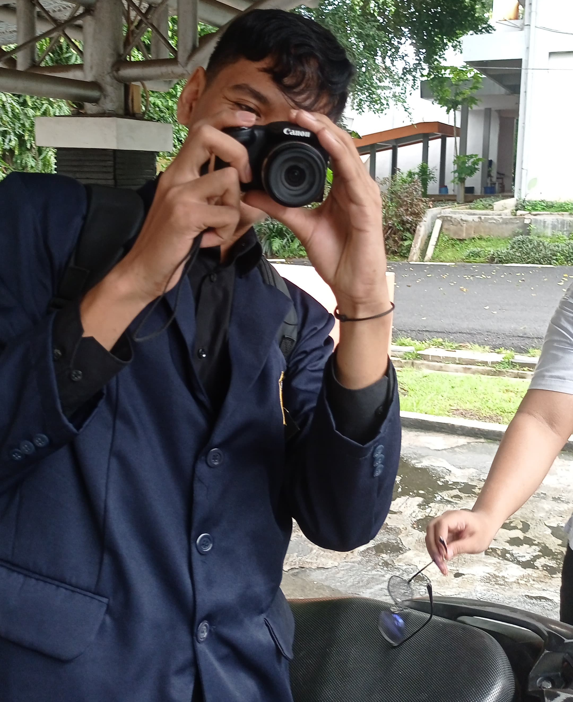

Profile
I am a 5th-semester Telecommunication Engineering student at Politeknik Negeri Semarang. Currently, I am undergoing an internship program on campus as part of my effort to deepen my understanding of the implementation of the Latest telecommunication technology. In my internship, I was given the task of creating a Network Monitoring Website to facilitate the task of Data Center technicians who perform network maintenance in the Semarang State Polytechnic campus area.

Complete Bio
| Full Name | Fakhri Bayu Dhaifullah |
|---|---|
| Date of Birth | May 25,2004 |
| Latest Education | Vocational High School |
| Hobby | Listen to music |